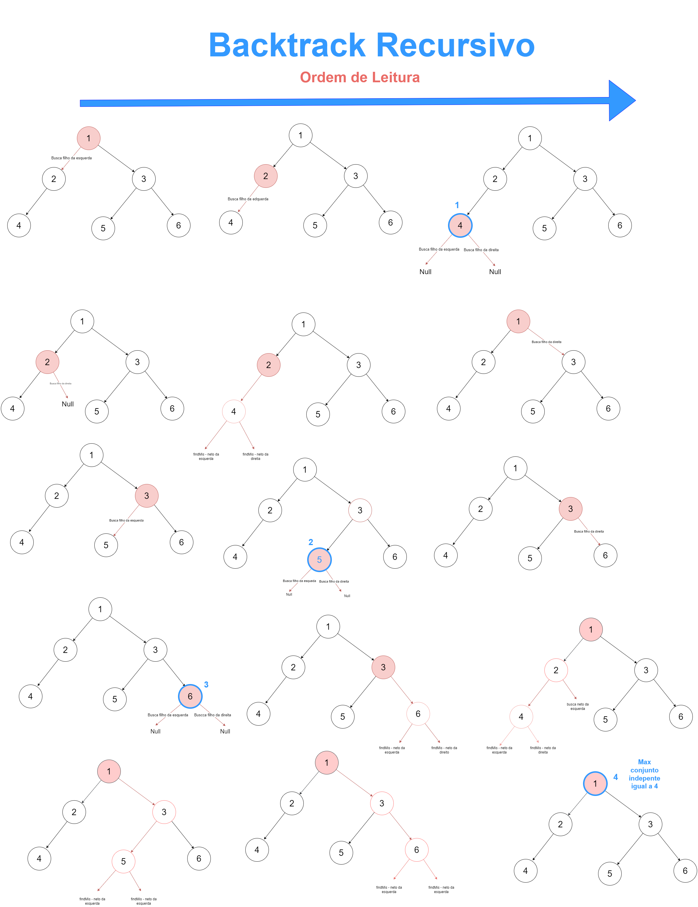

1. # Estrutura de dados para armazenar um nó de árvore binário
2. Nó:
3. dado
4. esquerda
5. direita
6.
7. Nó(dado, esquerda, direita):
8. dado = dado
9. esquerda = esquerda
10. direita = direita
11.
12. # Função recursiva para encontrar o tamanho do máximo conjunto independente para uma árvore binária
13. findMISSize(raiz):
14. # Caso base: árvore vazia
15. se (raiz == null) faça:
16. retorne 0
17.
18. # Caso 1: Excluir o nó atual do máximo conjunto independente e percorrer seu filho esquerdo e direito
19. excl = findMISSize(raiz.esquerda) + findMISSize(raiz.direita)
20.
21. # Caso 2: Incluir o nó atual no máximo conjunto independente e recorrente para seus netos
22. incl = 1
23.
24. se (raiz.esquerda) faça:
25. incl += findMISSize(raiz.esquerda.esquerda) + findMISSize(raiz.esquerda.direita)
26.
27. se raiz.direita faça:
28. incl += findMISSize(raiz.direita.esquerda) + findMISSize(raiz.direita.direita)
29.
30. # salve e retorne o número máximo de nós possível, incluindo ou excluindo o nó atual
31. retorne max(excl, incl)
Assim, queremos provar que P(n) = "FindMISSize(root)" retorna a quantidade de elementos do Conjunto Independente Máximo, para qualquer tamanho da árvore.
Caso Base: Se a quantidade de nós na arvore for igual a 0, ou seja, a raiz da árvore é nula, temos que por conta do condional ele retornará 0. Logo, P(0) vale.
Considere algum n > 0 Hipótese: P(k) vale, para 0 <= K < n.
Dado que, o algoritmo recebe uma árvore que contém sub-árvores, ou seja, com a quantidade de nós > 0, ele faz uma chamada recursiva passando o filho direito e filho esquedo do nó atual, caso sejam nulos o primeiro condional retornará 0 e voltará e retrocederá na pilha de chamadas até a instância que invocou as chamada, caso contrário, farará com que a várivel excluir¹ receba um valor > 0. Caso não sejam nulos, chamará recursivamente até o último nó que contém nós nulos, quando chegar nessa caso será possível incrementar o valor da varível incluir², para assim, demonstrar que esse é um nó independente. Ademais, vai ser verificado se os filhos da direita e da esquerda atual são nulos, se não forem nulos, irá ser possível incrementar o valor chamando recursivamente os netos da esquerda e da direita do nó atual, se ouver netos não nulos, irá retornar valores > 0, incrementendando, assim, a variável incluir. Desse modo, passado todas as chamadas recursivas, o valor de incluir e excluir são comparados a fim de retornar o valor máximo e assim, podemos provar que o algoritmo tem execução finita e retorna a quantidade de elementos e, portanto, P(K) vale nesse caso.
